PC vs 모바일 UI/UX — 차이와 해결 패턴
같은 목적의 화면이 왜 다르게 생겼는가. 실물 스크린 60장으로 확인한다.
0왜 다른가 — 근본 제약 5가지
결론부터. 모바일 UI의 모든 차이는 아래 5가지 제약에서 나온다. 이 표를 먼저 읽으면 뒤의 사례 40여 개가 전부 같은 원인의 변주임을 알 수 있다.
| 제약 | PC | 모바일 | 결과 |
|---|---|---|---|
| 포인터 정밀도 | 마우스 커서. 픽셀 단위로 정확하다. | 손가락. 접촉면이 넓고 시야를 가린다. | 터치 타깃 최소 크기 규정이 생겼다. Apple 44×44pt, Material 48×48dp. |
| 호버 없음 | 올려놓기만 해도 툴팁·메뉴·상태가 미리 보인다. | 탭하기 전에는 아무것도 모른다. | 모든 상태를 겉으로 노출해야 한다. 셀의 화살표(chevron), 상시 노출 버튼, 스와이프로 숨긴 액션이 그 대체물이다. |
| 화면 키보드 | 물리 키보드. 화면을 가리지 않는다. 약 52 WPM. | 화면 절반을 덮는다. 평균 36~38 WPM. | "타이핑을 없애라"가 모바일 입력 설계의 제1원칙이 됐다. §1 전체가 이 원칙의 사다리다. |
| 엄지 존 | 커서는 화면 어디든 같은 비용으로 간다. 가장자리는 오히려 "무한 타깃"이다(Fitts's law). | 상호작용의 75%가 엄지다. 49%는 한 손 사용이다. 하단은 편하고 상단은 멀다. | 핵심 조작이 전부 하단으로 내려왔다. 탭바·바텀시트·FAB가 그 결과다. |
| 화면·센서 | 넓은 가로 화면. 센서는 거의 없다. | 좁은 세로 화면. 대신 카메라·GPS·가속도계·진동이 있다. | 화면은 한 번에 한 작업만 보여준다. 대신 센서로 타이핑과 탐색 자체를 건너뛴다(§1.9, §4). |
1입력: 타이핑을 없애는 사다리
모바일 입력 설계의 원칙은 하나다. 타이핑을 줄이고, 줄일 수 없으면 없앤다. 아래 사례는 사다리 순서다. ① 타이핑 부담을 줄이고 → ② 키보드를 최적화하고 → ③ 타이핑을 선택으로 바꾸고 → ④ 카메라·생체인증으로 입력 자체를 제거한다.
먼저, PC의 입력은 어떤가 baseline
PC 전제화면이 넓고 키보드가 화면을 가리지 않는다. 그래서 필드 5개를 한 화면에 나란히 놓아도 문제가 없다. 달력 그리드 전체를 펼쳐도 마우스로 바로 클릭한다.
모바일에서 무너지는 지점같은 폼을 모바일에 그대로 옮기면 키보드가 화면 절반을 덮는다. 지금 입력하는 필드 말고는 보이지 않는다. 이 간극이 §1 전체의 출발점이다.
① 단계 분할 폼 — 한 화면에 한 질문 one thing per screen
문제키보드가 화면 절반을 가려서 여러 필드를 동시에 볼 수 없다.
해결질문 하나당 화면 하나로 폼을 쪼갠다. 사용자는 한 번에 한 가지만 입력하고 다음으로 넘어간다.
근거NN/g 모바일 입력 체크리스트: "키보드가 떠 있을 때도 필드가 보이는가"를 별도 항목으로 검사한다. NN/g
② 입력 타입별 전용 키보드 input-type keyboards
문제PC 키보드는 하나뿐이라 전환 비용이 없다. 모바일 문자 키보드로 숫자를 넣으려면 자판을 전환해야 한다. 느리고 오타가 잦다.
해결필드 타입에 맞는 키보드를 자동으로 띄운다. 카드 번호에는 숫자 패드, 이메일에는 @ 키보드.
근거NN/g 체크리스트: "이 필드에 맞는 키보드는 무엇인가". NN/g
③ OTP 자동 분할 입력 passcode boxes
문제6자리 코드를 입력창 하나에 넣으면 자리 구분이 안 돼 오탈자를 찾기 어렵다.
해결자리마다 박스를 나눈다. 한 자리를 넣으면 자동으로 다음 칸으로 넘어간다. SMS 코드 자동 채움도 함께 지원한다.
④ 휠 피커 — select 드롭다운의 모바일 번역 wheel picker
문제PC의 <select> 드롭다운은 마우스로 훑기 쉽다. 모바일에서 같은 목록은 항목이 작아 오탭이 잦다.
해결손가락으로 굴리는 드럼 롤. 항목 하나하나가 큰 터치 영역이 된다. 목록을 펼치지 않고도 정밀하게 고른다.
근거터치 타깃이 44pt/48dp보다 작으면 오탭이 급증한다. Apple HIG — Pickers · TetraLogical, target size

⑤ 바텀시트로 드롭다운 메뉴 대체 bottom sheet select
문제PC 드롭다운은 호버와 정밀 클릭을 전제한다. 모바일에서는 목록이 잘리고 항목이 너무 작다.
해결화면 아래에서 시트가 올라와 목록 전체를 크게 보여준다. 항목마다 충분한 터치 영역을 준다. 엄지에서 가장 가까운 위치다.
⑥ 칩·세그먼트로 라디오버튼 대체 chips / segmented
문제작은 원형 라디오 버튼은 커서 전제의 컨트롤이다. 손가락으로 정확히 누르기 어렵다.
해결알약 모양 칩은 라벨 전체가 터치 영역이다. 정밀도 없이도 선택이 된다.
⑦ 스테퍼 — 숫자 타이핑 제거 stepper
문제PC는 수량을 타이핑으로 넣는다. 모바일에서는 키보드를 띄우는 것 자체가 비용이다.
해결+/- 버튼 탭만으로 수량을 조절한다. 키보드가 아예 뜨지 않는다.
⑧ 소셜 로그인·생체인증 — 타이핑 자체를 제거 SSO / biometrics
문제모바일 타이핑은 평균 36~38 WPM으로 PC(약 52 WPM)의 70% 수준이다. 아이디·비밀번호 입력은 로그인 이탈로 이어진다.
해결Sign in with Apple은 탭 한 번, Face ID는 얼굴 인식 한 번으로 끝낸다. 입력 단계가 0이 된다.
⑨ 카메라·음성 입력 — 센서가 키보드를 이긴다 camera / voice input
문제카드 번호·바코드 같은 긴 문자열은 손으로 치면 느리고 오타율이 높다.
해결카메라로 스캔하거나 음성으로 말한다. PC에 없는 센서로 타이핑을 통째로 건너뛴다. §0의 다섯 번째 제약(센서)이 여기서는 우위가 된다.
근거NN/g 체크리스트: "카메라·GPS·음성으로 필드를 자동 채울 수 있는가". NN/g
2내비게이션: 메뉴 트리를 엄지 존으로 압축
PC는 사이드바·상단 GNB·브레드크럼을 동시에 펼쳐 둔다. 모바일은 그 트리를 하단 탭 3~5개 + 뒤로가기 + 검색으로 압축한다. 기준은 빈도다. 고빈도 메뉴는 엄지 존에, 저빈도 메뉴는 드로어 뒤에 둔다.
같은 서비스, 두 개의 내비게이션 same product, two navigations
PC화면 가장자리는 커서가 멈추는 "무한 타깃"이다(Fitts's law). 그래서 사이드바·상단 GNB·메가 메뉴를 상시 펼쳐도 비용이 없다.
모바일같은 서비스가 모바일에서는 메뉴 전체를 하단 탭과 검색창으로 압축한다. 아래 Airbnb·Etsy 쌍이 그 번역 과정을 그대로 보여준다.
① 하단 탭바 bottom tab bar
PC 대응물좌측 사이드바 내비게이션.
해결핵심 메뉴 3~5개만 남겨 하단에 고정한다. 엄지가 가장 쉽게 닿는 위치에 상시 노출한다.
근거모바일 상호작용의 75%는 엄지, 49%는 한 손이다(Hoober, 1,333명 관찰). Smashing Magazine
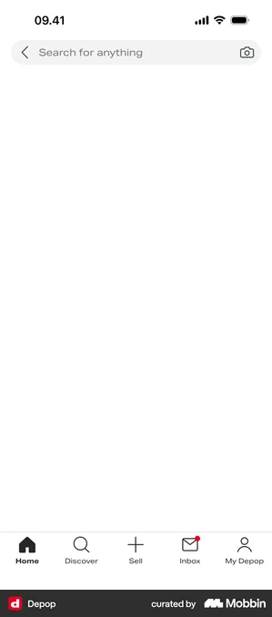
② 상단 내비바 + 뒤로가기 nav bar, not breadcrumb
PC 대응물브레드크럼. 계층 전체를 한 줄에 보여준다.
해결좁은 폭에 긴 경로를 못 넣는다. 대신 뒤로가기 화살표 하나로 "한 단계씩 복귀"만 남긴다. 경로 전체 대신 직전 화면만 기억하게 한다.
근거NN/g 모바일 내비게이션 패턴 정리. NN/g
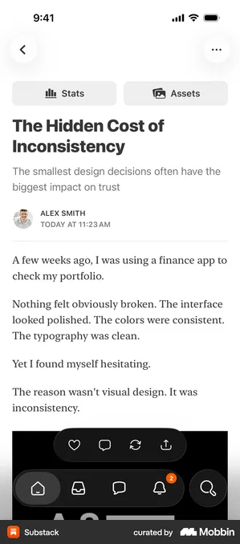
③ 햄버거 메뉴 / 드로어 — 대가가 있는 압축 drawer
PC 대응물사이드바에 저빈도 메뉴까지 전부 펼쳐 둔다.
해결저빈도 메뉴를 아이콘 뒤에 숨긴다. 탭하면 옆에서 드로어가 열린다.
근거(경고)숨긴 내비게이션은 발견율을 20% 이상 떨어뜨리고, 과제 시간을 모바일에서 15% 늦춘다(NN/g, 179명 실험). 그래서 고빈도 메뉴는 탭바에, 저빈도만 드로어에 두는 이원화가 표준이 됐다. NN/g
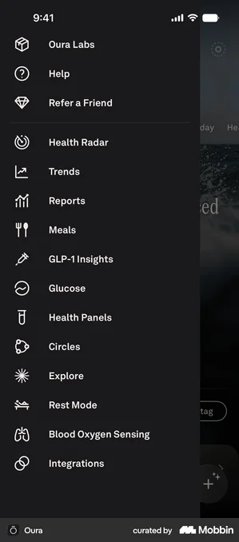
④ 바텀시트 내비게이션 — 지도 위의 목록 draggable sheet
PC 대응물지도와 사이드 패널을 좌우로 나란히 배치한다.
해결세로 화면에는 나란히 놓을 폭이 없다. 지도 위에 드래그 가능한 시트를 겹치고, 엄지로 지도-목록 비중을 조절하게 한다.
⑤ 스택 내비게이션 + 스와이프 백 stack + edge swipe
PC 대응물브라우저 뒤로가기 버튼. 커서가 화면 밖 상단 바까지 이동한다.
해결화면을 카드처럼 쌓는다(스택). 왼쪽 가장자리 전체를 스와이프 영역으로 만들어, 버튼 없이 이전 화면으로 돌아간다.
근거가장자리는 Fitts's law의 "무한 타깃"이다. iOS는 이를 시스템 제스처로 채택했다. VKUI는 이 스와이프 백을 View 컴포넌트로 직접 구현한다(3사 실측 문서 §0.5). NN/g
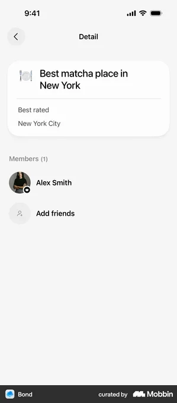
⑥ 검색 중심 내비게이션 search-first
PC 대응물메뉴 트리 탐색. 넓은 화면에서 카테고리를 펼쳐 훑는다.
해결모바일에서 깊은 메뉴는 탭 횟수를 늘린다. 홈 최상단에 검색창을 고정해 트리를 건너뛰게 한다.
근거구조가 클수록 검색 진입이 메뉴 탐색보다 빠르다. NN/g
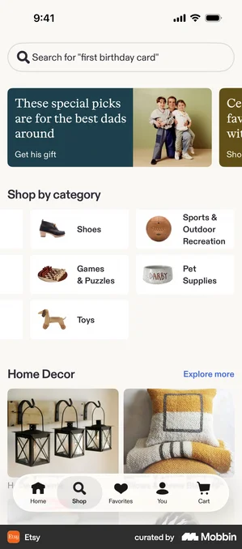
⑦ 가로 스크롤 탭 scrollable tabs
PC 대응물상단바에 카테고리 탭을 한 줄로 전부 노출한다.
해결좁은 폭에서 넘치는 탭을 가로 스크롤로 밀어 접근한다. 세로 공간은 쓰지 않는다.
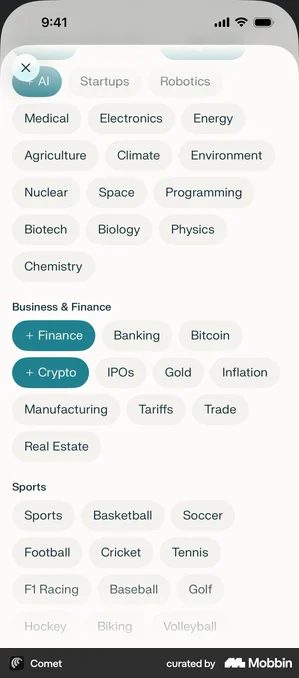
⑧ FAB — 핵심 행동 1개를 엄지 존에 고정 floating action button
PC 대응물헤더·툴바의 "새로 만들기" 버튼. 위치가 자유롭다.
해결모바일은 위치에 따라 도달 비용이 크게 다르다. 핵심 행동 1개만 원형 버튼으로 하단 우측(자연 도달 영역)에 띄운다.
근거Hoober의 3영역 모델. 상단(stretch zone)은 도달이 어렵고, 하단 우측이 정확도·속도가 가장 높다. Smashing Magazine
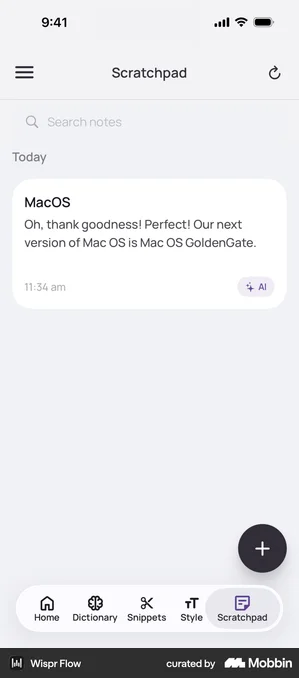
⑨ 제스처 내비게이션 — 화면 전체가 버튼 gesture navigation
PC 대응물없음. PC는 클릭할 대상이 항상 화면에 보여야 한다.
해결화면 전체를 입력 영역으로 쓴다. 스와이프 방향에 의미(좋아요/패스)를 부여해, 버튼 없이 전환한다. 화면 공간을 UI 요소로 소모하지 않는다.
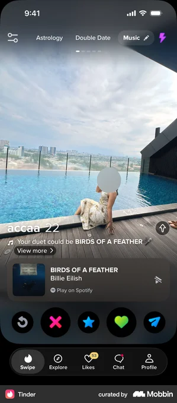
3모바일 컴포넌트 세트 — 각각이 해결하는 문제
이 섹션의 뼈대는 이 저장소의 3사 실측 문서다. antd-mobile(Ant Group)·Seed(당근)·VKUI(VK) 세 모바일 디자인 시스템을 전수 조사하면 19개 개념이 교집합으로 나온다. 서로 독립적으로 만든 3사가 같은 세트에 수렴했다. 아래는 그중 모바일 고유성이 강한 12개다. 각 컴포넌트의 3사 이름 · PC 대응물 · 의도를 실물 스크린과 함께 정리한다.
바텀시트 Bottom Sheet
3사 이름floating-panel(antd-mobile) · BottomSheet(Seed) · ModalPage(VKUI)
PC 대응물중앙 모달. 기능은 겹치지만 드래그로 높이를 바꾸지 못한다.
의도PC 모달이 뜨는 화면 중앙은, 모바일 한 손 조작에서 가장 먼 위치다. 바텀시트는 조작 영역을 엄지 옆으로 가져온다. 드래그 핸들이 높이 조절 제스처를 알려준다.
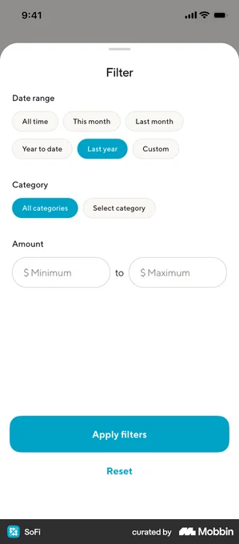
액션시트 Action Sheet
3사 이름action-sheet · ActionSheet(Seed) · ActionSheet(VKUI)
PC 대응물우클릭 컨텍스트 메뉴.
의도모바일에는 우클릭이 없다. 액션시트가 탭 하나로 같은 역할을 한다. 파괴적 동작(삭제)은 빨간색으로 구분하고 취소 버튼을 분리해, 실수 탭을 막는다.
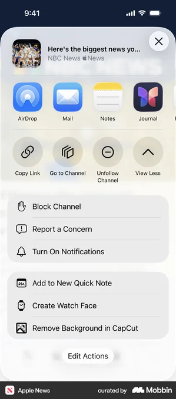
당겨서 새로고침 Pull-to-Refresh
3사 이름pull-to-refresh · PullToRefresh · PullToRefresh — 3사가 유일하게 이름까지 일치하는 컴포넌트다.
PC 대응물새로고침 버튼, F5. 대응 제스처는 없다.
의도새로고침 버튼을 둘 여백이 없다. 리스트를 아래로 당기는 동작은 스크롤과 같은 손동작이라 배우지 않아도 발견된다.
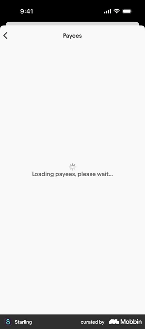
스낵바 / 토스트 Snackbar / Toast
3사 이름toast · Snackbar(Seed) · Snackbar(VKUI)
PC 대응물MUI Snackbar 등 PC에도 있다. 다만 PC는 우상단, 모바일은 하단(탭바 위)에 뜬다.
의도좁은 화면에서 알림창을 새로 띄우면 콘텐츠를 가린다. 짧게 떴다 사라지는 토스트는 사용자의 다음 동작을 막지 않고 결과만 알린다.
가이드M3 Snackbar
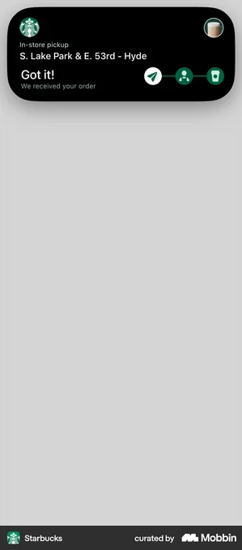
하단 탭바 Bottom Tab Bar
3사 이름tab-bar · Seed에는 없음(당근 앱은 탭바가 네이티브) · Tabbar(VKUI)
PC 대응물좌측 사이드바.
의도좁은 세로 공간에서 최상위 이동 경로를 항상 보이게 유지한다. Seed의 부재가 역으로 교훈이다. 웹뷰가 네이티브 앱 안에 임베드되면 탭바는 앱(네이티브) 몫이고 DS에는 필요 없다.
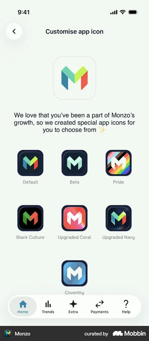
상단 내비바 Nav Bar
3사 이름nav-bar · AppBar(Seed, stackflow 패키지) · PanelHeader+부속 7종(VKUI)
PC 대응물헤더 바 + 브레드크럼. PC는 뒤로가기 버튼이 필수가 아니다.
의도모바일 화면은 스택으로 쌓인다. "이전 화면" 개념이 PC보다 강하다. 브라우저 뒤로가기가 없는 네이티브 환경에서, 좌측 화살표가 유일한 복귀 수단이다.
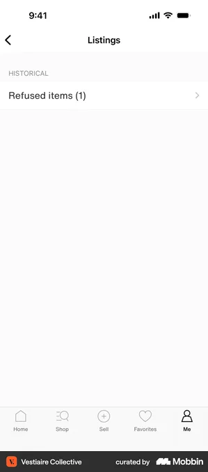
리스트 셀 List Cell
3사 이름list · List(Seed) · Cell 계열 6종(VKUI: Cell·SimpleCell·RichCell·MiniInfoCell·CellButton·HorizontalCell)
PC 대응물테이블 행. 다만 PC 테이블은 데이터 비교용이고, 모바일 셀은 탭 한 번으로 이동하는 내비게이션 단위다.
의도호버가 없으니 "누를 수 있음"을 겉으로 보여야 한다. 셀 전체가 탭 영역이 되고, 우측 화살표(chevron)가 이동 가능성을 표시한다. 3사 실측 문서의 결론 4번: 모바일 UI의 기본 단위는 버튼이 아니라 셀이다. VKUI가 셀을 6종으로 분화한 것이 그 증거다.
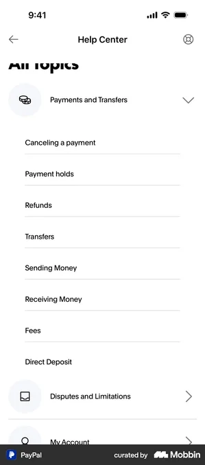
휠 피커 Wheel Picker
3사 이름picker 계열 8종(antd-mobile) · 내부 구현만(Seed, private) · VKUI에는 없음(Calendar·NativeSelect로 대체)
PC 대응물<select> 드롭다운.
의도iOS 관습을 얼마나 채택할지가 3사에서 갈렸다. antd-mobile은 정면 채택(전체의 10%가 picker), VKUI는 거부. 채택 여부 자체가 제품 전략의 문제라는 사례다.
가이드HIG Pickers
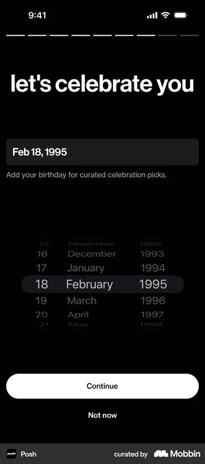
스와이프 액션 Swipe Action
3사 이름swipe-action(antd-mobile만) · Seed 없음 · VKUI 없음 — 3사 중 1사만 보유한 예외 사례다.
PC 대응물행 위에 마우스를 올리면 나타나는 호버 버튼.
의도호버 버튼의 모바일 번역이다. 셀을 옆으로 미는 제스처 뒤에 삭제·보관을 숨겨, 상시 노출 버튼 없이 리스트를 깔끔하게 유지한다. 참고 구현이 하나뿐이므로 채택 시 위험을 안고 간다.
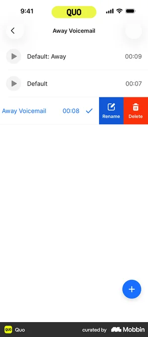
FAB Floating Action Button
3사 이름floating-bubble · Fab 계열 4종(Seed) · VKUI에는 없음
PC 대응물없음. PC는 헤더·툴바에 상시 버튼을 둔다.
의도콘텐츠로 꽉 찬 화면에서 자리를 만들지 않고 핵심 생성 동작을 항상 보이게 한다. 단, Apple HIG에는 FAB 패턴이 아예 없다. Material(Google) 관습이다. 플랫폼 관습 충돌의 대표 사례다.
가이드M3 FAB
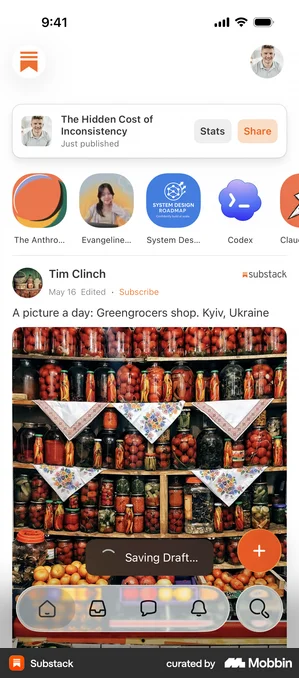
세그먼티드 컨트롤 Segmented Control
3사 이름segmented · SegmentedControl(Seed) · SegmentedControl(VKUI)
PC 대응물라디오 버튼 그룹, 상단 탭.
의도세로로 나열하는 라디오 목록은 좁은 화면에서 자리를 많이 먹는다. 상호 배타적 선택지를 가로 한 줄로 압축하고, 각 칸 전체를 터치 영역으로 만든다.
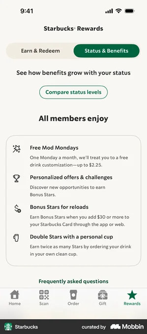
스켈레톤 Skeleton
3사 이름skeleton · Skeleton(Seed) · Skeleton(VKUI)
PC 대응물스피너. 개념은 PC에도 있지만, 스켈레톤은 모바일 앱과 함께 퍼진 패턴이다.
의도모바일 네트워크는 느리고 자주 끊긴다. 빈 화면은 멈춘 것처럼 보인다. 콘텐츠의 윤곽을 미리 그려 "레이아웃은 이미 정해져 있다"는 인상을 주고, 체감 대기 시간을 줄인다.
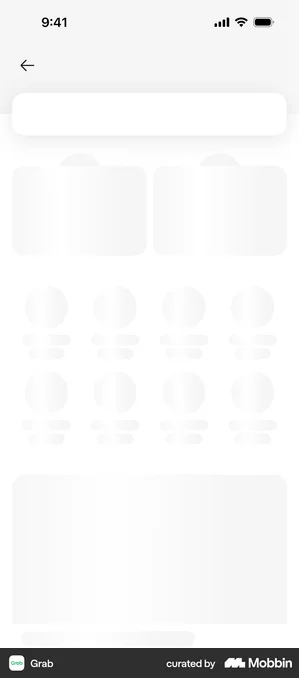
19개 교집합 전체 목록과 3사 이름 대조표 보기
당겨서 새로고침 · 액션시트 · 바텀시트 · 다이얼로그 · 토스트/스낵바 · 상단 내비바 · 탭 · 세그먼트 · 리스트/셀 · 텍스트 입력 · 선택 컨트롤(체크박스·라디오·스위치) · 슬라이더 · 셀렉트 · 날짜 입력 · 업로더 · 아바타 · 배지 · 스켈레톤/로딩 · 빈 상태. 전체 대조표와 부재/고유 컴포넌트 분석은 모바일 3사 컴포넌트 교차 벤치마크 §3~§5를 보라.
4모바일에만 있는 것들
PC 웹에는 대응물 자체가 없는 요소들이다. 원인은 두 갈래다. 하드웨어(터치스크린·카메라·GPS·가속도계·진동)와 사용 맥락(이동 중, 한 손, 흘끗 보기, 불안정한 네트워크).
세이프 에어리어 safe area
무엇노치·홈 인디케이터와 겹치지 않도록 콘텐츠를 배치하는 예약 영역. 하단 탭바가 화면 맨 끝에 붙지 않고 떠 있는 이유다.
왜 PC에 없나PC 화면에는 하드웨어가 파고든 영역이 없다. 시스템 제스처와 앱 UI가 같은 가장자리를 두고 경쟁하지도 않는다.
근거Apple HIG는 화면 가장자리를 시스템 제스처용으로 예약하라고 명시한다. antd-mobile은 safe-area를 아예 컴포넌트로 판다. HIG Gestures
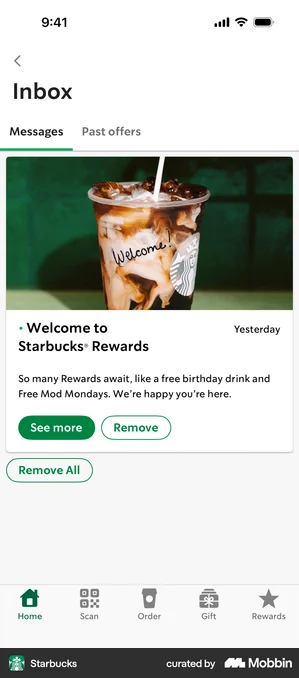
당겨서 새로고침의 역사 pull-to-refresh
무엇리스트 맨 위를 당겼다 놓으면 새로고침된다. 2009년 Loren Brichter가 Tweetie 앱에서 발명했고, Twitter가 특허를 인수했다.
왜 PC에 없나마우스에는 "화면을 물리적으로 당기는" 동작이 없다. 발명된 지 17년이 지나도 PC로 역수입되지 않았다. 제스처 어휘가 하드웨어에 종속된다는 증거다.

스와이프 액션 swipe to reveal
무엇리스트 항목을 옆으로 밀면 보관·삭제 버튼이 나타난다.
왜 PC에 없나PC는 우클릭 메뉴와 호버 버튼이 같은 일을 한다. 항목 하나를 "미는" 물리 동작이 마우스에 없다.
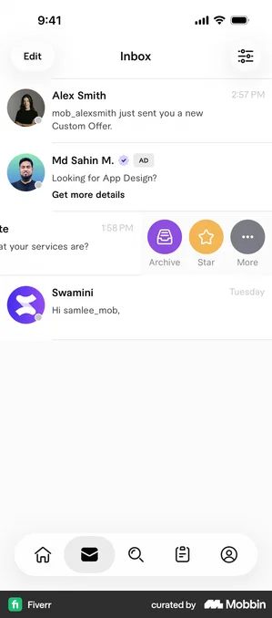
스토리 UI stories
무엇상단에 분할 진행 바. 탭하면 다음으로, 길게 누르면 정지. 풀스크린 몰입을 전제한 조작 문법이다.
왜 PC에 없나화면 전체를 손가락으로 직접 조작하는 것이 전제다. PC 브라우저는 창 모드가 기본이고, "화면 아무 데나 탭"이라는 입력이 없다.
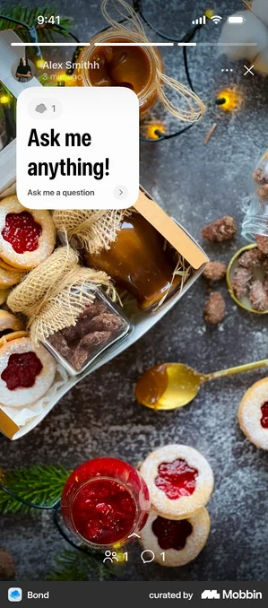
더블탭 좋아요, 길게 누르기 메뉴 double-tap / long-press
무엇사진을 두 번 탭하면 좋아요. 메시지를 길게 누르면 반응 이모지와 답장·복사·삭제 메뉴가 뜬다.
왜 PC에 없나더블클릭은 PC에도 있지만 "감정 표현" 트리거로 쓰이지 않는다. 길게 누르기는 시간 기반 제스처로, 우클릭이 이미 있는 PC에서는 필요가 없었다.
햅틱, 흔들어서 실행 haptics / shake
무엇진동으로 조작 결과를 손에 알려준다. 폰을 흔들면 실행 취소나 신고 화면이 뜬다.
왜 PC에 없나PC에는 가속도계도, 진동 모터도 없다. 입력(흔들기)과 출력(진동) 모두 하드웨어가 없다.
카메라 스캔과 AR 가이드 camera scan
무엇카메라 화면 위에 가이드 프레임과 안내 화살표를 겹쳐, 실물(문서·QR·카드)을 UI 입력으로 끌어들인다.
왜 PC에 없나실물을 카메라 앞에 가져가는 행동 자체가 "손에 든 기기" 전제다. PC 웹캠은 위치가 고정되어 스캔에 부적합하다.
위치 기반 "내 주변" UI nearby
무엇GPS로 내 위치를 중심에 놓고 주변 사용자·장소를 배치한다.
왜 PC에 없나PC는 GPS가 없거나 정확도가 낮다. "지금, 여기"라는 개념은 이동하는 기기에서만 의미가 있다.
권한 요청 프라이밍 permission priming
무엇OS 권한 팝업을 띄우기 전에, 앱이 만든 화면으로 "왜 필요한지"를 먼저 설명한다.
왜 PC에 없나모바일 OS는 권한 거부 후 재요청이 사실상 불가능하다. 첫 요청을 최적화하는 UX 단계가 통째로 생겼다. 브라우저 권한 팝업에는 이런 관행이 약하다.
근거프라이밍 화면을 거친 알림 권한 요청은 평균 65% 수락률을 기록했다(Adjust 데이터). AdExchanger
오프라인 상태 UI offline state
무엇연결이 끊기면 배너나 전용 화면으로 알리고 "다시 시도"를 준다. 3사 교집합의 "빈 상태(empty/error)" 컴포넌트가 이 상황을 담당한다.
왜 PC에 약하나PC는 유선·안정 와이파이 전제라 끊김이 드물다. 모바일은 이동 중 신호가 끊기는 것이 일상이라, 오프라인이 정식 UI 상태로 승격됐다.
잠금화면 라이브 액티비티 live activity
무엇앱을 열지 않아도 잠금화면에 실시간 상태 카드(주문 진행, 비행 현황)가 뜬다. "앱 밖의 UI"다.
왜 PC에 없나PC에는 "주머니에서 꺼내 흘끗 본다"는 사용 맥락이 없다. UI가 앱 경계 밖(잠금화면·위젯·다이내믹 아일랜드)으로 확장된 것은 모바일 고유 현상이다.
시트 위의 시트 — 모바일식 레이어링 stacked sheets
무엇바텀시트를 연 상태에서 그 위로 또 다른 시트가 겹쳐 올라온다.
왜 PC에 없나PC는 중앙 모달을 겹쳐 쌓는 것을 안티패턴으로 본다. 모바일은 시트가 "아래에서 위로 쌓인다"는 물리 은유가 있어, 겹침이 자연스러운 문법이 됐다.
5참고 자료
스크린 출처: 모든 스크린은 Mobbin에서 수집했다(2026-08-16).
각 캡션의 "원본" 링크가 해당 스크린의 Mobbin 페이지다. 이미지 파일은 captures/에 로컬 저장했다.
내부 근거 문서: 모바일 3사 컴포넌트 교차 벤치마크 ·
차기 후보 insights 리포트.
외부 연구·가이드라인
- NN/g — A Checklist for Designing Mobile Input Fields
- NN/g — Basic Patterns for Mobile Navigation
- NN/g — Hamburger Menus and Hidden Navigation Hurt UX Metrics
- NN/g — Fitts's Law and Its Applications in UX
- Smashing Magazine — The Thumb Zone (Hoober 연구 정리)
- BBC — 모바일 타이핑 속도 연구 (Aalto Univ., 37,000명)
- LukeW — Touch Target Sizes
- TetraLogical — Foundations: target size
- Wikipedia — Fitts's law
- Wikipedia — Loren Brichter (pull-to-refresh)
- Figma — Software Is Culture: Pull-to-refresh
- The Verge — Twitter pull-to-refresh 특허
- AdExchanger — Pre-permission prompts
- Apple HIG — Sheets
- Apple HIG — Action sheets
- Apple HIG — Tab bars
- Apple HIG — Pickers
- Apple HIG — Segmented controls
- Apple HIG — Gestures
- Material 3 — Bottom sheets
- Material 3 — Snackbar
- Material 3 — Navigation bar
- Material 3 — FAB
- Material 3 — Segmented buttons